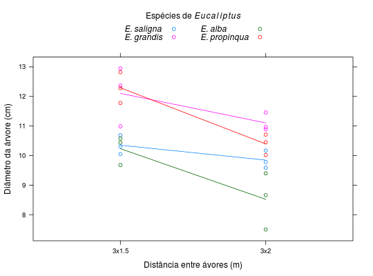

Diâmetro médio (cm), aos 5 anos de idade, de plantas úteis da parcela de um ensaio fatorial 2 \(\times\) 4, em blocos casualizados com 3 repetições, conduzido por H. A. Mello e outros, Mogi-Guaçu (1966-1971).
Um data.frame com 24 observações e 4 variáveis, em que
eucadistblocdiamBARBIN (2013), Exercício 13, pág. 206.
library(lattice) data(BarbinEx13)#> Warning: data set ‘BarbinEx13’ not foundstr(BarbinEx13)#> 'data.frame': 24 obs. of 4 variables: #> $ euca: Factor w/ 4 levels "E. saligna","E. grandis",..: 1 2 3 4 1 2 3 4 1 2 ... #> $ dist: Factor w/ 2 levels "3x1.5","3x2": 1 1 1 1 2 2 2 2 1 1 ... #> $ bloc: Factor w/ 3 levels "I","II","III": 1 1 1 1 1 1 1 1 2 2 ... #> $ diam: num 10.69 12.95 9.68 11.78 9.59 ...xyplot(diam ~ dist, groups = euca, data = BarbinEx13, type = c("p", "a"), xlab = "Distância entre ávores (m)", ylab = "Diâmetro da árvore (cm)", auto.key = list(columns = 2, cex.title = 1, font = 3, title = expression("Espécies de" ~italic(Eucaliptus))))